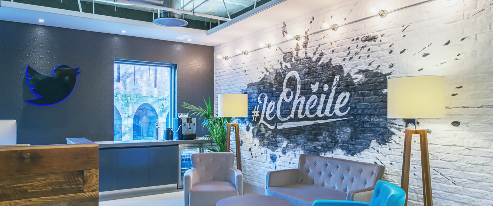

I’m an award-winning designer, developer, and entrepreneur who combines the big picture with an obsession over fine details. I love creating products that delight users and add tangible value.
May 2018 - August 2018 • Seattle
This summer, I will be working at Microsoft.
I will be working as a software engineering intern under Microsoft Office 365. I will be working on the Workplace Analytics team.
May 2017 - August 2017 • New York
I worked at Namely as their first software engineering intern, ever.
As a software engineering intern, I worked closely with Namely's core HCM team. I was given ownership of their product timeline, which I helped reshape both aesthetically and functionally to increase user engagement and create a more elegant experience.
May 2016 - November 2016 • San Francisco
Software engineering intern at Twitter.
Worked on Twitter's Timeline Service team. Developed a tool to analyze and debug why posts were selected for injection into user timelines, as well as implementing general overall improvements to the Twitter timeline experience.

October 2015 - May 2016 • New York
Software engineering intern at Vine.
Wrote Espresso tests for Twitter’s Vine app for Android, an app that has over 50 million downloads on the Play Store.